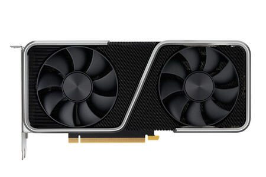
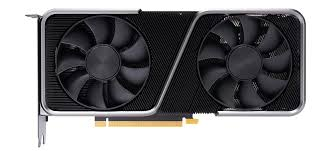
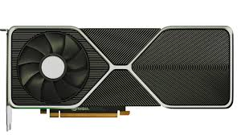
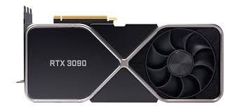

Priemero hay que empezar hablando de la gran empresa Americana multinacional especializada en el desarrollo de unidades de procesamiento gráfico y tecnologías de circuitos integrados para estaciones de trabajo, ordenadores personales y dispositivos móviles. los últimos años han estado en la cabeza del mercado de las graficas, que se enfocan en más ámbitos a parte del de los videojuegos. Este año, a persar de las dificultades que han aparecido por el COVID-19 han conseguido sacar una nueva tanda de gráficas. la serie 3000.
La nueva arquitecutra Ampere ha conseguido que las nuevas gráficas sean más potentes que las del año pasado y más baratas o iguales de precio en relación calidad-precio. Se ha conseguido desarollar la 2ª genereción de núcleos RT que generan el doble de rendimiento También ha salido la 3ª generación de núcleos Tensor consiguiendo hasta el doble de rendimiento. Por último presentan nuevas unidades SM permitiendo un rendimiento doble de FP32.
DLSS (supermuestreo de deep learning) de NVIDIA es la innovadora tecnología de renderizado de IA que lleva la fidelidad visual a un nuevo nivel utilizando procesadores de IA de núcleos Tensor dedicados en las GPU. DLSS aprovecha la potencia de una red neuronal de deep learning para aumentar la velocidad de fotogramas y generar imágenes atractivas y nítidas para los juegos. Incluso proporciona la capacidad de aumento necesaria para maximizar la configuración de trazado de rayos y aumentar las resoluciones de salida.
Los desarrolladores pueden ahora añadir efectos gráficos aún más sorprendentes a los juegos para PC. Las tarjetas gráficas presentan características avanzadas de DX12 como el trazado de rayos y el sombreado de tasa variable, que dan vida a los juegos con efectos visuales muy realistas y velocidades de fotogramas más rápidas.




En esta tabla se mostrá las gráficas recomendables para las resoluciones y FPS que uno quiere en juegos
| 1080p | 1440p | 4K | |
|---|---|---|---|
| 60 FPS | RTX 3060 TI y 3070 | RTX 3080 o 3090 | 120 FPS | RTX 3090 |
| 240 FPS | RTX 3070 | RTX 3080 o 3090 | |